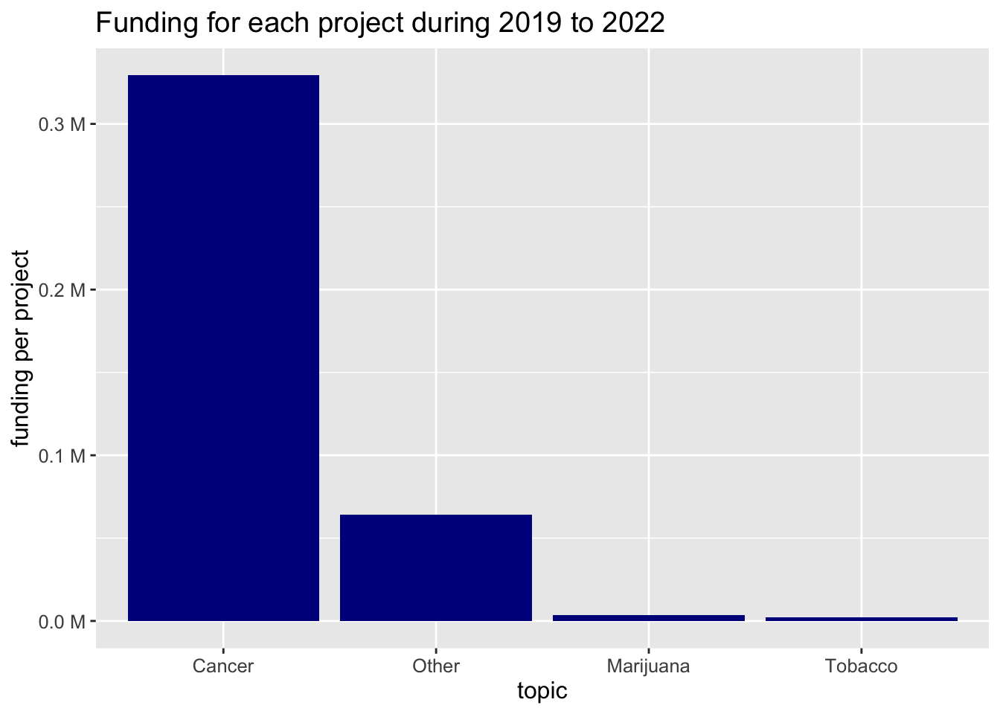
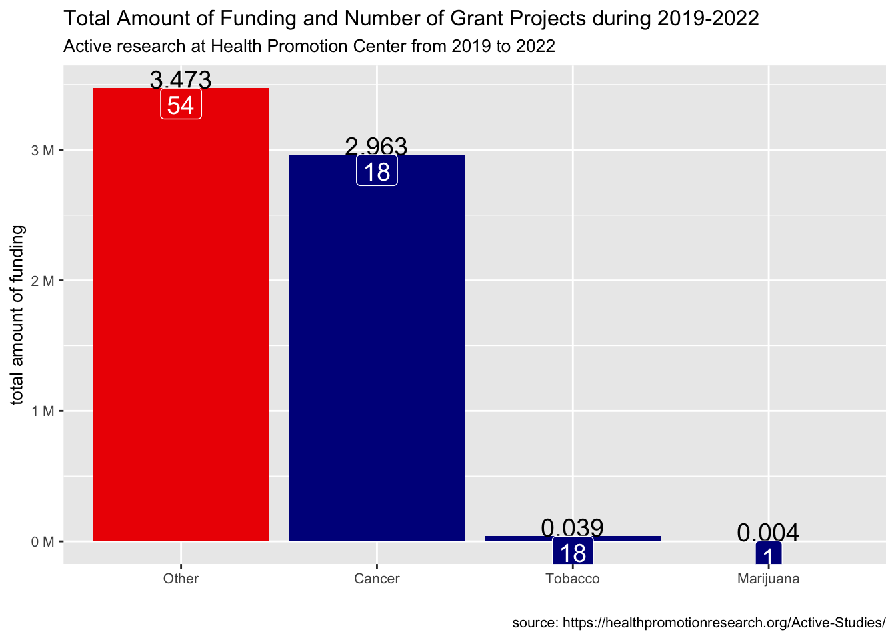

Web Scraping Academia Institute’s Grant Fundings using R
blog
Web Scrapping
How to use R for web scrapping
This is an example of how to web scrape grants of active research in college’s official website. Please follow the academia institute’s website robots rules.
Web Scrapping
topics = rep(NA, 84)
fundings = rep(NA, 84)
iter = 0
for (page in 1:9) {
## parent webpage
scrape_url <- paste0('http://XXXXXXXXXXXXXXXXXXXXXX', page)
html_form_page <- read_html(scrape_url)
## find the child web page containing projects' name, total award, topic etc.
child_url = html_form_page |> html_elements("h3 a[href]") |> html_attr("href")
for (item in 1:length(child_url)) {
iter = iter + 1
child_html_text <- child_url[item] |> read_html() |> html_elements("div[class='study_wrapper']") |> html_text()
topic = child_html_text |> str_extract(pattern = "Topic\\(s\\)\\: [a-zA-Z]+\\b") |> str_replace(pattern = "Topic\\(s\\)\\: ", "")
funding = child_html_text |> str_extract(pattern = "\\$\\d+\\,\\d+") |> str_replace_all(pattern = "\\$|\\,", "") |> as.numeric()
topics[iter] = topic
fundings[iter] = funding
}
}
dat <- data.frame(topic = topics, funding_amount = fundings) |>
add_row(topic = "Marijuana", funding_amount = 3743) |>
mutate(topic = ifelse(topic == "TobaccoMarijuana", "Tobacco", topic)) | topic | funding_amount |
|---|---|
| Tobacco | 1271 |
| Cancer | NA |
| Other | 98462 |
| Other | 25000 |
| Other | 64614 |
| Other | 75000 |
| Other | 72972 |
| Cancer | 329234 |
| Tobacco | 3072 |
| Other | 49860 |
Visualization in ggplot2
## funding per project
dat1 <- dat |>
group_by(topic) |>
summarise(funding_amount_mean = mean(funding_amount, na.rm = T)) |>
mutate(topic = fct_reorder(topic, desc(funding_amount_mean)))
ggplot(dat1) +
aes(x = topic, y = funding_amount_mean) +
geom_col(fill = "darkblue") +
scale_y_continuous(labels = scales::unit_format(unit = "M", scale = 1e-6)) +
labs(y = "funding per project", title = "Funding for each project during 2019 to 2022") +
theme(legend.position = "none", text = element_text(size = 12)) # remove lengend
## Total funding amount
dat2 <- dat |>
group_by(topic) |>
summarise(
funding_amount_sum = sum(funding_amount, na.rm = T),
n = n()) |>
mutate(
topic = fct_reorder(topic, desc(funding_amount_sum)),
highlight = ifelse(funding_amount_sum == max(funding_amount_sum), 1, 0) |> as.factor())
ggplot(dat2) +
aes(x = topic, y = funding_amount_sum, fill = highlight) +
geom_col() +
geom_text(aes(label = round(funding_amount_sum/ 10^6, 3)), vjust = 0.001, size = 5) +
geom_label(aes(label = n), vjust = 0.999, size = 5, color = "white") +
scale_fill_manual(values = c("darkblue", "red2")) +
labs(x = "", y = "total amount of funding",
title = "Total Amount of Funding and Number of Grant Projects during 2019-2022",
subtitle = "Active research at Health Promotion Center from 2019 to 2022",
caption = "source: https://healthpromotionresearch.org/Active-Studies/") +
scale_y_continuous(labels = scales::unit_format(unit = "M", scale = 1e-6)) +
theme(legend.position = "none", text = element_text(size = 10)) # remove lengend